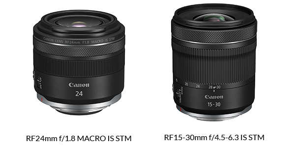

News and Press Release
Canon Strengthens Its RF Range with Two New Versatile Lenses
12 Jul 2022 — Canon today announced the launch of the RF24mm f/1.8 MACRO IS STM and RF15-30mm f/4.5-6.3 IS STM lenses, which are versatile and lightweight additions for photography enthusiasts using the EOS R range of mirrorless cameras.
Both lenses take advantage of the large diameter and short back focus that the EOS R camera system is renowned for, which results in both a compact optical system and excellent quality throughout the whole image.